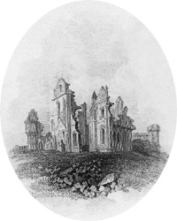

|
|
||||
|
|
Home | Corson Collection | Biography | Works | Image Collection | Recent Publications | Portraits | Correspondence | Forthcoming Events | Links | E-Texts | Contact The AntiquaryFirst Edition, First Impression: The Antiquary. By the Author of "Waverley" and "Guy Mannering". In Three Volumes. Vol. I (II-III). Edinburgh: Printed by James Ballantyne and Co. For Archibald Constable and Co. Edinburgh; and Longman, Hurst, Rees, Orme, and Brown, London, 1816. Composition | Synopsis | Reception | Links
By the end of the year, Scott was being pressed by his publishers. They had given their tacit blessing to his trip to the Continent, anticipating profits from The Field of Waterloo and Paul's Letters to His Kinsfolk, which they were happy to see appear before The Antiquary. They had, however, paid Scott significant advances for the elusive novel, and Constable, in particular, was in severe financial difficulty. In a letter of 22 December 1815 to his friend J.B.S. Morritt, Scott confessed that he was yet to begin work on the novel and had produced only 'a very general sketch' (Letters, IV, 145). It seemly likely, however, that the plot had already been mentally elaborated, as the eventual penning of the novel was exceptionally rapid. Scott probably began writing on 30 December and had completed The Antiquary by mid-March 1816. The action of The Antiquary can be precisely dated to July and August 1794, approximately a decade after the action of Guy Mannering. In Scott's conception, as expressed in the 'Advertisement' at the head of the first edition, the novel completed 'a series of fictitious narratives, intended to illustrate the manners of Scotland at three different periods. WAVERLEY embraced the age of our fathers, GUY MANNERING that of our own youth, and the ANTIQUARY refers to the last ten years of the eighteenth century'. Scott powerfully evokes a nationwide fear of French invasion and Republican insurrection as well as the underlying economic confidence of the times. The antiquarian Jonathan Oldbuck, who Scott claimed to have based on his childhood friend George Constable, is largely a self-portrait. In the debates concerning the Roman colonization of Scotland, the fantastic Scottish history of Hector Boece, and the authenticity of James Macpherson's Poems of Ossian, Scott relives the quarrels and enthusiasms of his youth. Oldbuck's unsuccessful courtship of Eveline Neville recalls something of Scott's own unhappy experience with Williamina Belsches. Perhaps because it involved the recollection of scenes of his early life, The Antiquary remained Scott's personal favourite among his novels. The geographical location of the action, conversely, is indefinite. Most topographical references point to a composite setting somewhere in North-East Scotland. Some sequences, however, imply that the narrative takes place on the North Coast, bolstering the theory that the swindler Dousterswivel was modelled on the German adventurer Rudolf Erich Raspe (author of The Surprising Adventures of Baron Munchausen) who tricked Sir John Sinclair into a fallacious mining enterprise on his Caithness lands.  SynopsisThe hero, known as Major Neville, is believed to be the illegitimate son of Edward Neville, brother to the Earl of Glenallan. He meets and falls in love with Isabella Wardour in England, who, mindful of her father's hatred of illegitimacy, rejects his suit. Under the assumed name of Lovel, he follows her home to Fairport, Scotland, meeting en route Jonathan Oldbuck, Laird of Monkbarns, a neighbour of Isabella's father, Sir Arthur Wardour. Oldbuck, the antiquary of the title, takes an interest in Lovel who is a sympathetic listener to his learned discourses and whose misfortunes in love remind him of his own. As a young man Oldbuck had been hopelessly attached to Eveline Neville, now wife to the Earl of Glenallan. Lovel saves Sir Arthur and Isabella from drowning when surprised by the tide but is forced to leave Fairport after wounding Oldbuck's nephew Captain Hector M'Intyre, a rival for Isabella's hand, in a duel. In his absence Lovel distinguishes himself as a soldier and secretly rescues Sir Arthur from the financial ruin to which his reliance on his unscrupulous German agent Dousterswivel would have led him. Lovel finally returns to Fairport and is unexpectedly revealed to be the son and heir of the Earl of Glenallan (and of Oldbuck's unrequited love Eveline). In this new guise, he wins Isabella's hand.ReceptionPublished in an edition of 6,000 copies on May 4, 1816, The Antiquary was even more successful than its predecessors, sold out within three weeks. It went through a further nine editions in Scott's lifetime. It was received with similar critical acclaim to Guy Mannering. John Wilson Croker, writing for the Quarterly, even thought that the absence of supernatural elements gave The Antiquary the edge over Guy Mannering. There was particular praise for the character of the beggar Edie Ochiltree who plays an important role in bringing the relationship between Lovel and Isabella to a happy conclusion. The only new criticism came from The British Lady's Magazine which suggested that Scott was merely repeating his characters with different names. Most critics, however, were pleasantly surprised that the author's creative vein had not been exhausted by his previous novels. Links
Last updated: 19-Dec-2011 |
|||